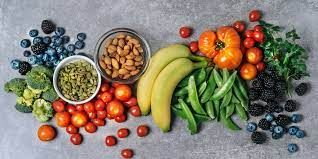

When talking about diet, I oversimplified dieting earlier. While it is true that at face value, dieting revolves around calories consumed versus calories expended, it is more complicated than that. It also matters what you eat. Obviously eating fruits and vegetables and your other necessary food groups is important but it is especially important to keep track of the portion sizes of your food as well as whether or not the foods you eat have more carbohydrates, proteins, or sugars. Depending on your goals, depends on what and how much you should eat. If you want to lose weight, you should eat less overall, cut out sugars and have less carbohydrates as well as increase the time or intensity of workouts. If you would like to gain weight, especially muscle, you should eat more generally speaking.
Picture of a healthy diet:
